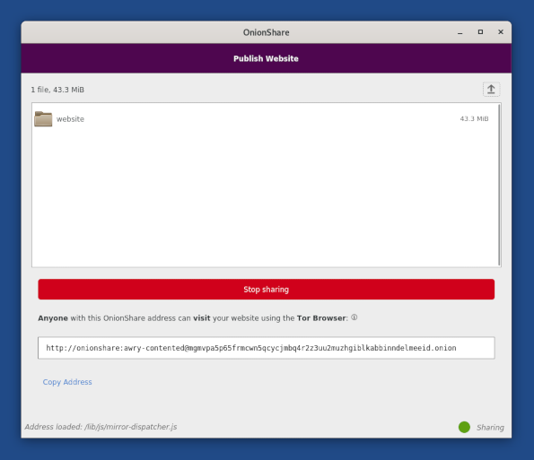

L'assistant de connexion à Tor
Tails 4.20 change complètement la façon de se connecter au réseau Tor depuis Tails.
Après vous être connecté au réseau local, un assistant de Connexion à Tor vous aide à vous connecter au réseau Tor.

Ce nouvel assistant est particulièrement utile pour les personnes qui sont exposées à un risque élevé de surveillance physique, soumis à une forte censure du réseau, ou disposant d'une mauvaise connexion Internet :
Il protège mieux les personnes qui ont besoin de passer inaperçu, si l'utilisation de Tor peut paraître suspecte pour la personne qui surveille leur connexion Internet (contrôle parental, partenaire abusif, réseau scolaire ou professionnel, etc.
Il permet aux personnes qui ont besoin de se connecter à Tor par l'intermédiaire de ponts de les configurer sans avoir à changer la configuration par défaut dans l'Écran de bienvenue.
Il aide les personnes encore novices à comprendre comment se connecter au réseau Wi-Fi local.
Il fournit des informations lors de la connexion à Tor et aide à résoudre les problèmes de réseau.
Nous savons que cet assistant est loin d'être parfait, même si nous y travaillons depuis février. Si quelque chose n'est pas clair, confus, ou ne fonctionne pas comme vous l'attendez, veuillez nous envoyer vos commentaires à tails-dev@boum.org (liste de courriel publique).
Cette première version de l'assistant de Connexion à Tor n'est qu'une première étape. Nous y ajouterons d'autres améliorations dans les mois à venir :
Sauvegarder les ponts Tor dans le stockage persistant (#5461)
Aider à détecter quand le Wi-Fi ne fonctionne pas (#14534)
Détecter si vous devez vous connecter à un réseau local qui utilise un portail captif (#5785)
Synchroniser l'horloge pour rendre l'utilisation des ponts Tor plus facile en Asie (#15548)
Faciliter l'apprentissage de nouveaux ponts Tor (#18219, #15331)
Changements et mises à jour
Mise à jour d'OnionShare de la version 1.3.2 vers la version 2.2.
Cette mise à jour majeure ajoute une fonctionnalité permettant d'héberger un site web accessible depuis un service oignon de Tor.

Mise à jour de KeePassXC depuis la version 2.5.4 vers la version 2.6.2.
Cette mise à jour majeure s'accompagne d'une refonte de l'interface.

Mise à jour du Navigateur Tor vers la version 10.5.2.
Mise à jour de Thunderbird vers la version 78.11.0.
Mise à jour de Tor vers la version 0.4.5.9.
Mise à jour du noyau Linux vers la version 5.10.46. Cela devrait améliorer la prise en charge des matériels les plus récents (graphiques, Wi-Fi, etc.).
Renommer usurpation d'adresse MAC en anonymisation d'adresse MAC dans l'écran de bienvenue.
Problèmes corrigés
Mises à jour automatiques
Le téléchargement des mises à jour et la gestion des erreurs sont plus robustes. ([!tails_ticket 18162]])
Affichage d'un message d'erreur en cas d'échec de la vérification des mises à jour disponibles. ([!tails_ticket 18238]])
Programme d'installation de Tails
L'affichage du bouton Réinstaller est maintenant plus fiable. (#18300)
L'Installation et la Mise à jour ne sont plus disponibles après le retrait de la clé USB. (#18346)
Pour plus de détails, lisez notre liste des changements.
Problèmes connus
Les mises à jour automatiques depuis Tails 4.14 et plus ancien sont cassées.
Pour mettre à jour depuis Tails 4.14 ou plus ancien, vous pouvez au choix :
Faire une mise à jour manuelle.
Corriger la mise à jour automatique depuis un terminal. Pour cela :
Démarrer Tails et définissez un mot de passe d'administration.
Dans le terminal, exécutez la commande suivante :
torsocks curl --silent https://tails.boum.org/isrg-root-x1-cross-signed.pem \ | sudo tee --append /usr/local/etc/ssl/certs/tails.boum.org-CA.pem \ && systemctl --user restart tails-upgrade-frontendCette commande est une commande unique qui est répartie sur plusieurs lignes. Copiez et collez le bloc entier en une seule fois et vérifiez qu'elle s'exécute comme une seule ligne de commande.
Environ 30 secondes plus tard, on devrait vous demander de mettre à jour vers la dernière version de Tails. Si la demande n'apparaît pas, vous exécutez peut-être la dernière version de Tails.
Voir la liste des problèmes connus de longue date.
Obtenir Tails 4.20
Pour mettre à jour votre clé USB Tails et conserver votre stockage persistant
- Les mises à jour automatiques sont cassées depuis Tails 4.14 et plus ancien. Voir les problèmes connus ci-dessus.
Les mises à jour automatiques disponibles depuis Tails 4.14 ou plus récent vers la version 4.20.
Vous pouvez réduire la taille du téléchargement des futures mises à jours automatiques en effectuant une mise à jour manuelle vers la dernière version.
- Si vous ne pouvez pas faire une mise à jour automatique ou si le démarrage de Tails échoue après une mise à jour automatique, merci d'essayer de faire une mise à jour manuelle.
Pour installer Tails sur une nouvelle clé USB
Suivez nos instructions d'installation :
Le stockage persistant de la clé USB sera perdu si vous faites une installation au lieu d'une mise à jour.
Pour seulement télécharger
Si vous n'avez pas besoin d'instructions d'installation ou de mise à jour, vous pouvez télécharger directement Tails 4.20 :
Et ensuite ?
Tails 4.21 est prévu pour le 10 août.
Jetez un œil à notre feuille de route pour savoir ce que nous avons en tête.